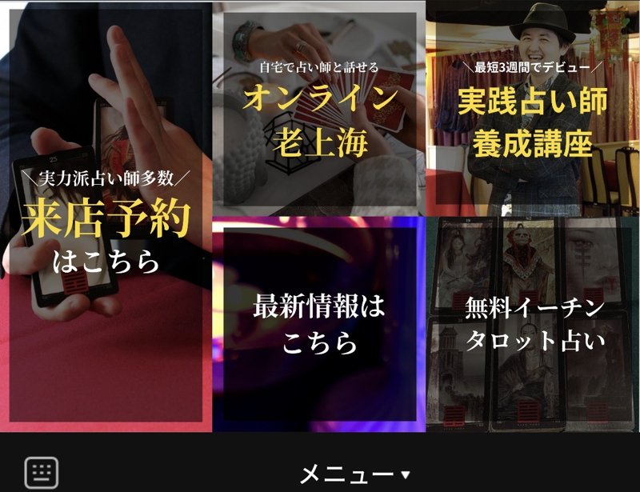
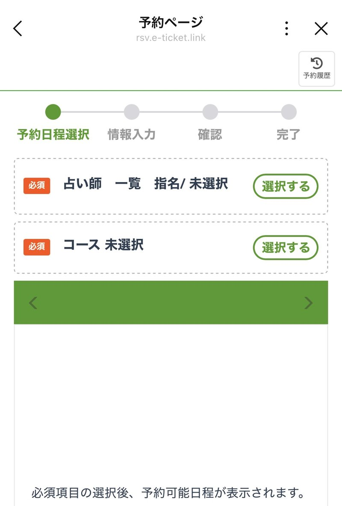

HOW TO BOOK
予約方法
来店での鑑定は公式LINE、オンライン(Zoom)鑑定はオンライン老上海のサイトからご予約いただけます。
来店での鑑定(公式LINE)
先生の出勤日も、LINEの予約画面で確認できます。
LINEで友だち追加
下の「LINEで予約する」ボタンから、占い館 老上海の公式LINEを友だち追加します。
メニューの「来店予約はこちら」をタップ
トーク画面の下に出るメニューの、左の大きな「来店予約はこちら」をタップします。

占い師とコースを選ぶ
予約画面で「占い師 一覧 指名」と「コース」の「選択する」を押して選びます。

○の日時を選んで予約
選んだ先生の予約できる日時が○で表示されます(＝その先生の出勤日です)。○を選び、情報入力・確認へ進めば予約完了です。

オンライン(Zoom)での鑑定
オンライン老上海のサイトでご予約いただけます。
ユーザー登録・ログイン
オンライン老上海のサイトで新規登録をして、ログインします。
占い師と時間を選ぶ
「オンライン占いの確認」のカレンダーで、待機している占い師と時間を確認し、指名する占い師と時間を選びます。
チケットを購入(前払い)
鑑定時間の前にチケットを購入します。延長する場合は、鑑定が終わってから再度チケットを購入します。
Zoomで鑑定
時間になったら、カレンダーから鑑定を受けます。
受付状況はLINEでもお問い合わせいただけます。
お電話でのお問い合わせ
045-306-9175
営業時間 10～21時 / 定休日 不定休